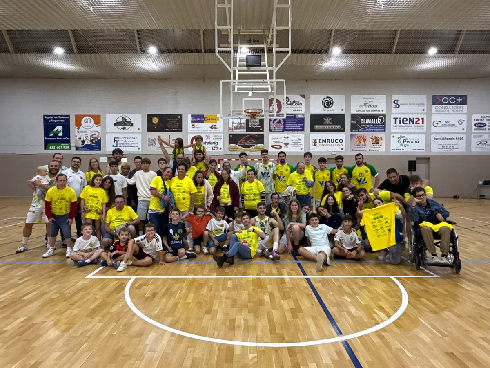
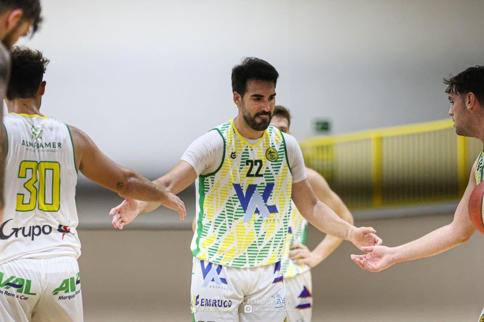
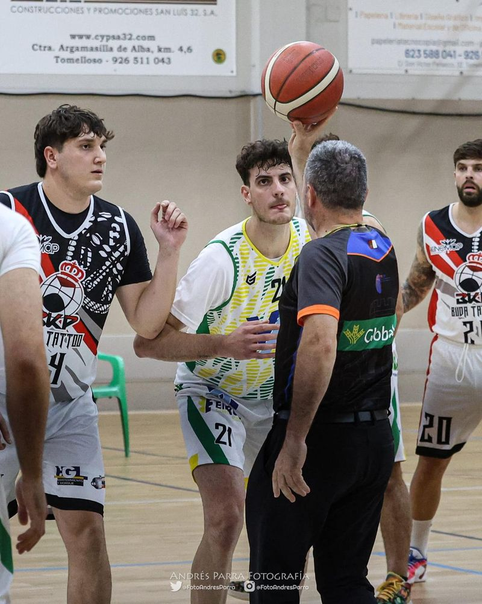
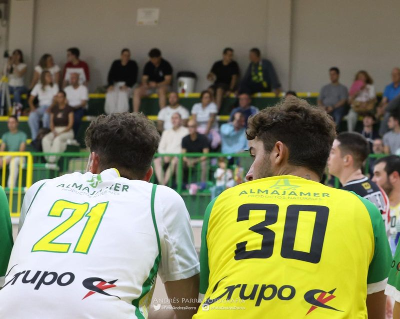
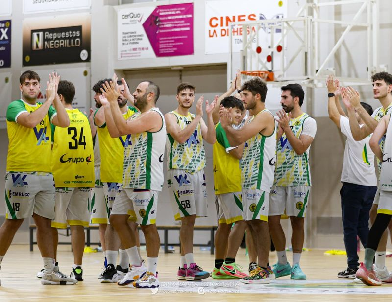
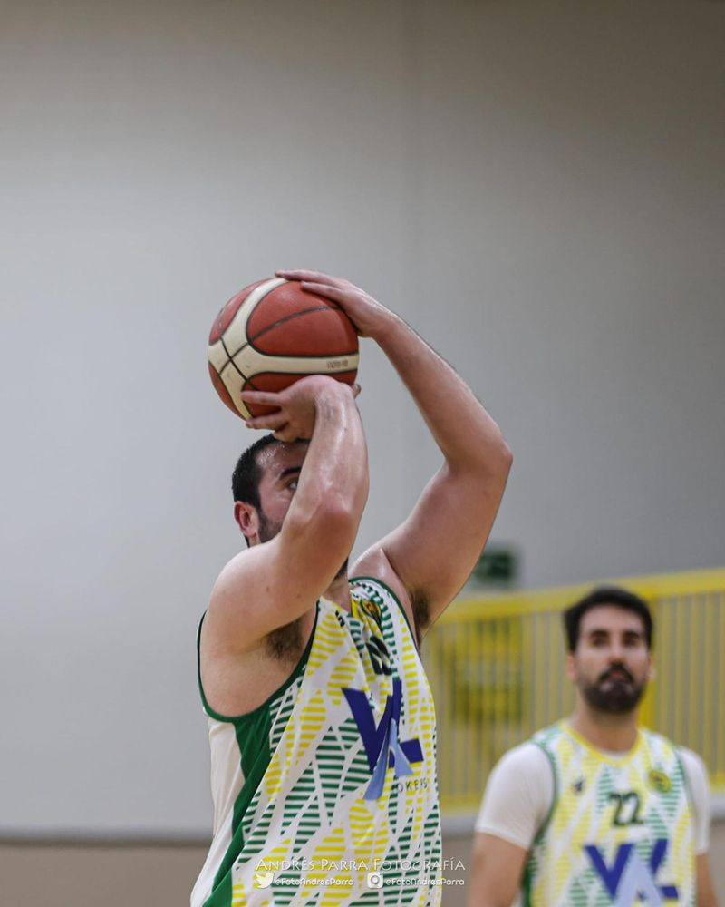
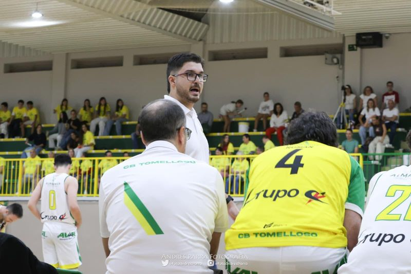

Los tomelloseros rozan los cien puntos y tumban al BKP Buda Tattoo (98-81) en su primer partido de la temporada

Val Brokers CB Tomelloso 98 - 81 BKP Buda Tattoo
Categoría: Liga STM 1ª Autonómica Masculina — Jornada 2
Fecha: sábado 3 de octubre de 2026, 19:30 h — Pabellón San José (Tomelloso)
Parciales: 21-22, 27-22 (48-44), 25-19 (73-63), 25-18 (98-81)
Árbitros: José Carvajal González y Mª Esperanza Sánchez López
Había ganas de ver al equipo en casa, y la espera mereció la pena. Con el partido de la primera jornada en Hellín aplazado, el Val Brokers CB Tomelloso debutaba este sábado 3 de octubre en la Liga STM 1ª Autonómica Masculina, a las 19:30 horas en el pabellón San José, ante un BKP Buda Tattoo de Puertollano que llegaba como colíder tras su contundente victoria en la primera jornada. El examen era exigente, y los locales lo resolvieron con autoridad: 98-81.
El quinteto inicial de Aarón Núñez estuvo formado por Javier Bonillo, Rafael Román, Adrián Ramírez, Mario Melero y Loup González, con Miguel Ángel Lara, Jaime Yáñez, Carlos García, Celestino Pedroche, Jorge Román y Daniel Bonillo completando la rotación desde el banquillo. El primer cuarto fue de tanteo y de muchos puntos: los puertollaneros se fueron por delante al final del período, 21-22. En el segundo empezaron a mandar los locales con un parcial de 27-22 que les llevó al descanso con ventaja, 48-44, en un partido todavía abierto.


La diferencia llegó tras el paso por vestuarios. El tercer cuarto se cerró con un 25-19 que dejaba el acumulado en 73-63, y en el último los de casa no levantaron el pie: otro parcial de 25-18 para cerrar el definitivo 98-81, a solo dos puntos de la centena en el estreno liguero.


Mario Melero fue el máximo anotador del encuentro con 22 puntos, 6 de 7 desde el tiro libre, 7 rebotes y 5 asistencias. Le acompañaron Javier Bonillo, con 20 puntos y 5 asistencias, y Rafael Román, con 18 puntos y cuatro triples. También pasaron de la decena Miguel Ángel Lara, con 14 puntos, y Daniel Bonillo, con 13. Por el BKP Buda Tattoo destacaron Antonio Benito Fernández con 18 puntos, Jesús Manuel Barragán con 14 y Alberto Moreno con 12, además de Sergio Hervás, que firmó un trabajo monumental bajo los tableros con 15 rebotes pese a que el marcador no le acompañó.


Dirigieron el encuentro José Carvajal González y Mª Esperanza Sánchez López. Con esta victoria, el Val Brokers CB Tomelloso suma un triunfo en su único partido disputado, a la espera de jugar el encuentro aplazado en Hellín. La próxima cita será el sábado 17 de octubre, a las 20:00 horas, en el pabellón Puerta de Santa María de Ciudad Real, ante el Basket Cervantes, líder del grupo con dos victorias en dos partidos.